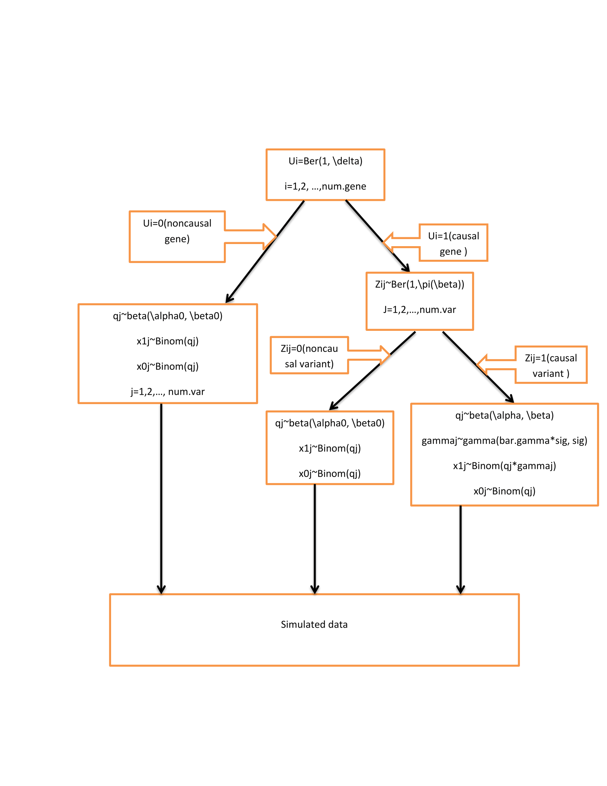

Simulation study
Shengtong Han
Last updated: 2017-03-31 Code version: 3cdc5b9
Set up
Defined R function gene.simu is used to generate case control data. The data generation work flow is as 
N0, N1 are sample size in case and controls. m: number of variants per gene. alpha0, beta0, alpha, beta; two scale parameters in beta distriution to generate AF in control and cases. gamma.mean: the mean in gamma distribution to generate RR; sigma: anohter parameter in gamma distribution; pi: probability of a variant being causal.
gene.simu=function(N0, N1, m, alpha0, beta0, alpha, beta, gamma.mean, sigma, pi, model, num.group, split.ratio)
{
pheno=c(rep(0,N0), rep(1,N1)) # filtering step
q <- rbeta(m, alpha0, beta0)
x1x0=matrix(nrow=(N0+N1), ncol=m)
for (i in 1:m) # generate the data with certain variants full of zeros
x1x0[,i]=rpois((N0+N1), q[i])
filter.x1x0=x1x0[,!apply(x1x0==0,2,all)] # filter variants with 0 counts in both cases and controls since these variants are noninformative
mm=ncol(filter.x1x0)
var.index=which(colSums(x1x0!=0)>0) # get the variant index in the original data before filtering
##################
#mm=m
gamma <- rep(1,mm)
Zij=rep(0,mm)
qq=rbeta(mm, alpha0, beta0)
if (model==1)
{
# for (k in 1:num.group)
# {
# from=split.ratio[k]*mm+1; to=split.ratio[k+1]*mm
# Zij[from:to]=rbinom((to-from+1), 1, pi[k])
# }
for (i in 1:mm)
Zij[i]=rbinom(1,1,pi[var.index[mm]])
qq[Zij==1] <- rbeta(sum(Zij==1), alpha, beta)
gamma[Zij==1] <- rgamma(sum(Zij==1), gamma.mean*sigma, sigma)
}
x <- array(0, dim=c(length(pheno), mm))
for (j in 1:mm)
{
x1=rbinom(1, sum(filter.x1x0[,j]), N1*gamma[j]/(gamma[j]*N1+N0))
#x1=sum(filter.x1x0[,j])-x0
x0=sum(filter.x1x0[,j])-x1
x[sample.int(N0,x0),j]=1
x[N0+sample.int(N1,x1),j]=1
}
x=as.matrix(x)
return (list(geno=x,pheno=pheno,q=q,gamma=gamma, Zij=Zij, var.index=var.index))
}num.gene=1000
m=200
N0=5000; N1=5000
delta=1
alpha0 <- 0.1
beta0 <- 1000
alpha <- 0.1
beta <- 2000
gamma.mean <- 10
sigma <- 1
split.ratio=c(0,1)
num.group=length(split.ratio)-1
anno.num=1case 1: one annotation feature
This is the simplest case in that every variant has one annotation feature if any. Set \(\beta=0.5\), \(\bar{\gamma}=10\) to make signal strong with burden close to 10; 80% elements of of Ajk are 1. If the feature has one dimension, the objective likelihood function would be simple to be optimized using common R packages. The log likelihood as a function of \(\beta\) (true \(\beta=0.5\))is as  .
.
This plot tells us the likelihood only has one mode in one dimension case. It looks like \(\beta\) is overestimated by R package-BFGS. With the fixed randomly generated data, run BFGS 50 times with random initials. The mean of \(\hat{\beta}=0.7631\) and SD=2.344796e-05.
Important Note: \(\beta\) cannot be set too large, say >10 because it controls the probability of a variant of being causal. Consider an extreme case where all variants are truly causal risk variants. The likelihood of the data is close to the product of Bayes factor of every variant, free of \(\beta\) value. Any large enough \(\beta\) will give the same likelihood.
Session information
sessionInfo()R version 3.2.2 (2015-08-14)
Platform: x86_64-w64-mingw32/x64 (64-bit)
Running under: Windows 7 x64 (build 7601) Service Pack 1
locale:
[1] LC_COLLATE=English_United States.1252
[2] LC_CTYPE=English_United States.1252
[3] LC_MONETARY=English_United States.1252
[4] LC_NUMERIC=C
[5] LC_TIME=English_United States.1252
attached base packages:
[1] stats graphics grDevices utils datasets methods base
loaded via a namespace (and not attached):
[1] backports_1.0.5 magrittr_1.5 rprojroot_1.2 tools_3.2.2
[5] htmltools_0.3.5 yaml_2.1.14 Rcpp_0.12.1 stringi_0.5-5
[9] rmarkdown_1.3 knitr_1.15.1 git2r_0.18.0 stringr_1.2.0
[13] digest_0.6.8 evaluate_0.10 This R Markdown site was created with workflowr